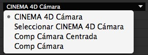

CINEWARE en After Effects
Con CINEWARE en After Effects, las escenas y animaciones de CINEMA 4D pueden cargarse directamente en una composición de After Effects. De este modo pueden verse y renderizarse dentro de After Effects.


Lo que debes saber del flujo de trabajo de CINEWARE
En la última versión de Adobe After Effects pueden cargarse elementos 3D complejos, escenas e incluso animaciones desde MAXON CINEMA 4D a una composición After Effects. La integración sin igual de esas aplicaciones permite a los usuarios de After Effects crear impresionantes composiciones motion graphics más rápido y fácil que nunca.
Para garantizar una facilidad de uso óptima, el potente motor de render CINERENDER de CINEMA 4D se ha integrado en After Effects de tal forma que permite renderizar capas CINEMA 4D de forma fácil y directa dentro de la composición. Esto elimina la necesidad de tener que estar constantemente cambiado de aplicación o, dependiendo del flujo de trabajo de producción, evita realizar repetidamente peticiones de datos 3D.
Iniciarse en el fascinante mundo de las 3D es sencillo. Si aún no posees una versión completa de CINEMA 4D, puedes iniciarte en las 3D usando la versión CINEMA 4D Lite incluida en After Effects.
Para trabajar en las 3D de forma exhaustiva y profesional, recomendamos las versiones CINEMA 4D Broadcast o CINEMA 4D Studio.
Toda la información de los productos está disponible en www.maxon.net.
Cargando y editando archivos MAXON CINEMA 4D
Los archivos de CINEMA 4D (.c4d) pueden cargarse directamente en la ventana de proyecto de Adobe After Effects como assets y colocarse en la composición como una capa CINEMA 4D. Los parámetros de las capas CINEMA 4D se mostrarán como efectos 'CINEWARE' en la ventana de efectos. Puede añadirse efectos adicionales a la capa de CINEMA 4D de la forma usual. Esos efectos influirán sobre el renderizado generado por el motor de render CINERENDER.
Si no hay ningún archivo de CINEMA 4D, puede crearse uno mediante el menú
Si en tu ordenador no hay instalada una versión completa de CINEMA 4D, se abrirá CINEMA 4D Lite, incluido con After Effects. Una vez se ha creado una nueva escena, ésta puede guardarse mediante el menú
Para realizar cambios en el archivo de CINEMA 4D importado en After Effects, selecciona el asset o capa CINEMA 4D y luego selecciona
Los proyectos modificados y guardados en CINEMA 4D se actualizarán automáticamente en After Effects.
Configurando los ajustes de mostrado / renderizado
La integración del motor de render CINERENDER de CINEMA 4D permite renderizar capas de CINEMA 4D directamente en After Effects. De esta forma los usuarios de After Effects mantienen el control de todos los elementos 3D en su composición hasta el renderizado final. Los ajustes de renderizado se controlan en los ajustes del efecto CINEWARE.
Ten presente que básicamente cada capa de CINEMA 4D tiene sus propios ajustes de renderizado y mostrado. Todas las instancias de un archivo CINEMA 4D cargados en la composición tendrán automáticamente sus ajustes de render y mostrado sincronizados a menos que el control Syncronize Layer, en la parte superior del panel de control, se establezca en off.
Cada fotograma renderizado se cachea para acelerar el flujo de trabajo. Cuando se emplean resoluciones reducidas o automáticas, el resultado renderizado de CINEMA 4D también tendrá una resolución reducida.
Para garantizar un flujo de trabajo rápido, los Ajustes de Render pueden establecerse a Software mientras se está trabajando en la composición. Las texuras se mostrarán en baja resolución y los shaders se evaluarán en un grado correspondientemente menor.
También hay opciones disponibles para desactivar las texturas y shaders (Software Rendering desactiva las texturas y los shaders; Draft Rendering desactiva solo las texturas) y para evitar precálculos con simulaciones de dinámicas o de partículas. Sin embargo esas opciones deben activarse en el renderizado final o cuando se cacheen simulaciones (baking) en la escena de CINEMA 4D.
Mira también Cache Dynamics y Preparar Partículas.
El render también puede acelerarse mucho cacheando las texturas con la opción Keep Textures in RAM.
Trabajando con cámaras y elementos de escena de CINEMA 4D
Tal y como sucede en After Effects, puede añadirse cualquier cantidad de cámaras con sus distintos ajustes, incluyendo animaciones, en el archivo de CINEMA 4D. Para garantizar una integración correcta entre ambas aplicaciones, los movimientos de cámara deben sincronizarse. Esto se realiza en el menú de Project Settings de CINEWARE.
Aquí puede definirse si debe usarse una cámara de CINEMA 4D existente o una de After Effects.
Hay cuatro opciones disponibles:

La opción CINEMA 4D Camera usará la cámara activada actualmente en la escena de CINEMA 4D. Usa la opción Select CINEMA 4D Camera para seleccionar una cámara de CINEMA 4D existente. Ten presente que sólo pueden seleccionarse las cámaras que estén incluidas en la escena de CINEMA 4D.
Las siguientes dos opciones permiten a los usuarios de After Effects crear cámaras. La diferencia entre las opciones es el sistema de coordenadas empleado. El origen del sistema de coordenadas usado por CINEMA 4D está situado en el centro de la escena, y sus ejes están orientados dentro del espacio 3D en direcciones positivas y negativas. En After Effects, el punto de coordenadas nulas se encuentra a la izquierda de la parte superior de la composición.
Por eso los ajustes de CINEWARE ofrecen dos métodos para trabajar con cámaras en After Effects. Si se selecciona la opción Comp Camera, las coordenadas de After Effects y CINEMA 4D serán iguales.
Como puede resultar confuso para los usuarios de After Effects veteranos, puede usarse la opción Centered Comp Camera para alinear ambos sistemas de coordenadas.
Si se emplea la función Extract para extraer una cámara de CINEMA 4D a After Effects, se recomienda emplear la opción Comp Camera. En caso contrario la vista se desfasará como resultado de la desviación del sistema de coordenadas.
Capas
CINEMA 4D tiene un sistema de capas exhaustivo que puede usarse para organizar escenas 3D complejas. Este sistema de capas no está diseñado para crear una jerarquía de capas apiladas como sucede en After Effects, sino para agrupar elementos de escena y así poder acceder a ellos de forma sencilla y eficiente. Por ejemplo, si es necesario, pueden ocultarse o mostrarse partes individuales de la escena. Esas capas de CINEMA 4D pueden activarse o desactivarse de forma individual en After Effects. Sólo se renderizarán las capas de CINEMA 4D activas en las capas CINEMA 4D de la composición. Esto permite usar el mismo archivo de CINEMA 4D múltiples veces en una composición dada con su capa CINEMA 4D y mostrar elementos específicos de la escena.
Por ejemplo, los elementos 3D del fondo y de primer plano pueden separarse y apilarse en la composición After Effects o combinarse con material de archivo en After Effects.
Multipase
El multipase en 3D es el proceso de renderizar imágenes empleando elementos de imagen independientes en lugar de renderizar los diversos elementos juntos en una sola imagen.
Esos elementos se combinan formando una composición donde se pueden editar, ajustar o modificar de forma independiente los elementos de imagen de diversas maneras, incluyendo corrección de color. Un ejemplo típico de renderizado multipase consiste en extraer las distintas reflexiones de superficie (difuso, especular, sombra, etc.) de forma separada e incorporarlas todas en After Effects cada una con un modo diferente.
Las composiciones pueden construirse rápidamente usando la opción Add Image Layer de CINEWARE. Se crearán varias capas CINEMA 4D, conteniendo cada una un único elemento activo de render. La opción Set Multi-Pass permite definir los elementos que se mostrarán en una capa CINEMA 4D dada.
Para crear capas adicionales para elementos de render individuales, las capas pueden duplicarse y luego puede añadirse el elemento deseado a ellas usando la opción mencionada anteriormente.
El multipase también se emplea para extraer pases de objetos, que son usados como Luma Mattes para corregir por separado los elementos individuales en After Effects. Ten presente que como mínimo debe activarse el modo de render Standard Draft para generar pases individuales. Los pases adicionales sólo pueden extraerse mediante la etiqueta Composición.
Para configurar pases de objetos, los objetos en CINEMA 4D correspondientes deben tener asignada una etiqueta Composición con el ID de grupo deseado. Además la opción Multipase debe estar activada en los ajustes de renderizado de CINEMA 4D con los pases de objetos deseados definidos. Como After Effects muestra los nombres de los pases, se recomienda nombrar los pases en CINEMA 4D.
Sin embargo, ten presente que en esta integración aún no se soportan los post efectos de CINEMA 4D ni la separación de luces individuales (multipase de iluminación).
Para obtener un resultado óptimo al trabajar con multipases, se recomienda establecer los ajustes del proyecto de After Effects a Linear Workflow (linearized Working Space) y emplear una profundidad de color de 32 bits, si es posible.
En caso contrario pueden aparecer artefactos visuales.
Intercambiando información de escena
Para poder alinear las animaciones de cámara o la iluminación de la escena entre CINEMA 4D y una composición After Effects, las cámaras y luces, incluyendo animaciones, establecidas en la escena de CINEMA 4D pueden transferirse a After Effects en cualquier momento. Todas las propiedades de las cámaras y las luces que sean comparables se alinearán. Haciendo click en el botón Extract en el menú Command de CINEMA 4D creará los elementos correspondientes en la composición After Effects.
Ten en cuenta que sólo se transferirán aquellas luces que tengan activada la opción Exportar a AFX en los ajustes de su pestaña General en CINEMA 4D. Esta opción está activada por defecto en todos los objetos Luz y Cámara de CINEMA 4D.
Las cámaras de After Effects con animaciones también pueden transferirse a la escena de CINEMA 4D. Esto puede hacerse usando la opción Merge en el menú Command.
Usa el comando
Usando referencias
Una capa CINEMA 4D en After Effects es una capa 2D. Para colocar capas 3D de forma eficiente en una composición After Effects resulta de ayuda tener disponible información acerca la posición de los objetos de CINEMA 4D como solidos / superficies de color. Para ello, los objetos poligonales o capas en la escena de CINEMA 4D deben tener una etiqueta de Composición Externa asignada. Puede activarse la opción Sólido y puede definirse un tamaño para la superficie de color en After Effects.
Usa la función Extract de CINEWARE para importar los datos correspondientes.
Para evitar problemas al importar escenas de CINEMA 4D en After Effects, deben estar activadas las opciones Guardar Polígonos para Melange y Guardar Animación para Melange en el menú
Visión general de los parámetros individuales
A continuación se describen brevemente los ajustes de CINEWARE. Puede encontrarse una explicación funcional en el contexto de una aplicación práctica en el contenido anterior.
Opciones
Si se desea usar un renderizador distinto al proporcionado CINERENDER, es decir, uno más moderno o una versión de CINEMA 4D distinta, introduce la ruta al ejecutable de CINEMA 4D correspondiente (*.exe o *.app).
Tenga en cuenta que las otras versiones de CINEMA 4D tienen que tener licencia cuando se usen para renderizar!
Esta ruta sólo sirve para definir la versión de CINEMA 4D que debe usarse para editar archivos de CINEMA 4D. Por ejemplo, si tienes una nueva versión de CINEMA 4D instalada y deseas utilizarla para editar archivos, todo lo que hay que hacer es introducir la ruta al ejecutable de CINEMA 4D correspondiente (*.exe o *.app).
Aquí es donde se define el puerto de comunicaciones entre CINEWARE y el renderizador de CINEMA 4D integrado (CINERENDER). Si este ajuste se modifica por algún motivo, After Effects deberá reiniciarse.
Decide si la capa debe imitar su render y configuración del proyecto en todas las demás capas para el archivo de C4d en esta composición. Igualmente decide si otras capas pueden cambiar la configuración de esta capa. Nota, este parámetro sólo es visible cuando hay más de una instancia del archivo C4d en la composición.
Ajustes de Render
Como los tiempos de render pueden aumentar de forma dramática en escenas complejas, CINEWARE ofrece tres modos de renderizado distintos:
La apariencia es similar a la de los Paneles de Vista de CINEMA 4D y sirve para previsualizar la escena. Los shaders y los multipases no se mostrarán.
Visualización sin antialiasing y puede usarse como fase preliminar para el renderizado final.
Renderiza la escena usando los ajustes de render definidos en la escena de CINEMA 4D.
 Software - Draft - Final
Software - Draft - Final
Define el tipo de visualización. O bien se usan los ajustes originales de CINEMA 4D o bien la vista se reducirá a Wireframe o Box para trabajar de forma más fluida.
Desactiva el mostrado de texturas para navegar más rápido.
Desactiva el renderizado de simulaciones dinámicas, de cloth y de partículas, así como las simulaciones de MoGraph para acelerar la visualización. Por tanto los resultados mostrados de esos procesos no serán precisos. Esta opción no debe estar activada en el renderizado final - o alternativamente, deben haberse cacheado las simulaciones en el archivo de CINEMA 4D.
Esta opción nunca debe activarse para realizar el renderizado final; en caso contrario los efectos de partículas, la mayoría de las funciones de MoGraph, las dynamics o cloth no se mostrarán ni renderizarán correctamente.
Acelera el renderizado cacheando las texturas para no tener que volver a renderizarlas (inconveniente: no se mostrarán las modificaciones realizadas en las texturas).
Purge Memory
Después de un uso prolongado del servidor render, puede ser más lento, ya que almacena las escenas que se están procesando. Si el renderizado parece más lento o menos receptivo, este botón se puede utilizar para limpiar la memoria del servidor de render (esta opción no está visible si se utiliza CINEMA 4D R15 o anterior para renderizar).
Project Settings
Define la cámara que se usará para mostrar la capa CINEMA 4D.
La cámara activa por defecto en la escena de CINEMA 4D.
Permite seleccionar una cámara de la escena de CINEMA 4D.
Esta cámara usa el sistema de coordenadas de After Effects.
Se mostrarán coordenadas equivalentes en After Effects y CINEMA 4D. Como las coordenadas de CINEMA 4D difieren de las de After Effects, los usuarios de After Effects deben cambiar su forma de pensar. Esta opción debe usarse si se extrae una cámara CINEMA 4D, si no la vista de After Effects cambiará a la escena de CINEMA 4D.
Set Camera
Si la escena de CINEMA 4D contiene más cámaras además de la cámara por defecto, aquí puede seleccionarse cualquiera de ellas usando el botón Set Camera.
Si la escena de CINEMA 4D contiene capas, aquí pueden seleccionarse. Sólo se usarán los elementos de la escena de CINEMA 4D que estén asignados a esta capa de CINEMA 4D. Esto permite mostrar de forma individual grupos de objetos en las capas CINEMA 4D de After Effects.
Set Layers
Aquí pueden seleccionarse las capas de la escena de CINEMA 4D.
Multipase (Flujo de Trabajo Lineal)
Al activar la opción CINEMA 4D Multi-Pass se permite definir pases individuales para la escena de CINEMA 4D. Están predefinidos, incluso si la opción Multipase no se ha activado en la escena de CINEMA 4D.
Los pases especiales como Canal de Objeto deben configurarse en la escena de CINEMA 4D y activarse en el menú Multipase en la Configuración de Render.
Set Multi-Pass ...
Aquí pueden seleccionarse los pases individuales para usarse en la Línea de Tiempo. Ten en cuenta que los post efectos (ejem., Hair, Sketch and Toon, etc.) no son soportados.
Los multipases definidos en CINEMA 4D pueden extraerse a la Línea de Tiempo activando la opción Define Multi-Passes en CINEWARE y haciendo clic en Add Image Layers.
En otras palabras, sólo se extraerán los multipases que estén definidos en la Configuración de Render de CINEMA 4D.
Add Image Layers
Si se pulsa el botón Add Image Layers sin tener activada la opción Define Multi-Passes, se extraerán a la Línea de Tiempo todos los multipases existentes.
Los post efectos y los pases de luces no se soportan en los multipases.
Comandos
La cámara de composición activa en After Effects se añadirá a la escena de CINEMA 4D. También puede ser una cámara animada.
Extract
Todas las cámaras y luces de una escena de CINEMA 4D dada, incluyendo sus animaciones y propiedades, se transferirán a la composición de After Effects como capas en la Línea de Tiempo.
Los objetos poligonales que tengan una etiqueta de Composición Externa asignada se colocarán como capas NULL de referencia de posición en la composición o se generarán como superficies de color.